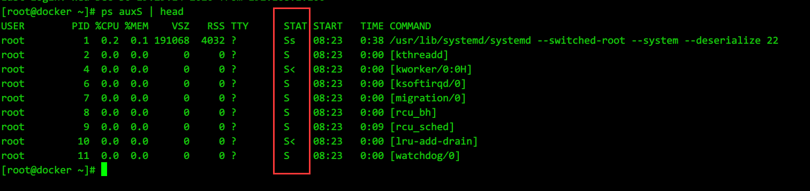

引用:
https://www.cnblogs.com/Anker/p/3271773.html
https://www.cnblogs.com/yuxc/archive/2012/11/04/2753391.html
https://blog.csdn.net/LEON1741/article/details/78142269
https://blog.csdn.net/davion_zhang/article/details/48268319
产生的原因
孤儿进程：一个父进程退出，而它的一个或多个子进程还在运行，那么那些子进程将成为孤儿进程。孤儿进程将被init进程(进程号为1)所收养，并由init进程对它们完成状态收集工作。
僵尸进程：一个进程使用fork创建子进程，如果子进程退出，而父进程并没有调用wait或waitpid获取子进程的状态信息，那么子进程的进程描述符仍然保存在系统中。这种进程称之为僵死进程。
如果进程不调用wait / waitpid的话， 那么保留的那段信息就不会释放，其进程号就会一直被占用，但是系统所能使用的进程号是有限的，如果大量的产生僵死进程，将因为没有可用的进程号而导致系统不能产生新的进程. 此即为僵尸进程的危害，应当避免。
任何一个子进程(init除外)在exit()之后，并非马上就消失掉，而是留下一个称为僵尸进程(Zombie)的数据结构，等待父进程处理。这是每个 子进程在结束时都要经过的阶段。如果子进程在exit()之后，父进程没有来得及处理，这时用ps命令就能看到子进程的状态是“Z”。如果父进程能及时 处理，可能用ps命令就来不及看到子进程的僵尸状态，但这并不等于子进程不经过僵尸状态。 如果父进程在子进程结束之前退出，则子进程将由init接管。init将会以父进程的身份对僵尸状态的子进程进行处理。
查找方式
ps命令查找
参数里多一个大写S, 即给进程的stat位标志ps auxS ps efS
只显示僵尸状态的进程
ps -ef | grep defunct
- 从/proc下查看状态
通过cat /proc/进程PID/status 进行查看[root@docker ~]# cat /proc/11/status Name: watchdog/0 Umask: 0000 State: S (sleeping)
- 批量获取僵尸进程
awk 可以实现指定的内容匹配才输出, 完整命令会比较冗长.
相对简单一点的正则表达式, 利用ps 自定义输出列字段:ps -eo stat,pid,cmd | grep -E "^[Zz]+ +"
处理
僵尸进程无法被kill, 因为它本身就一个要exit的进程, 只是依赖的事件未发生之前, 被标记为zombie.
由孤儿进程的定义, 如需要清理已有的僵尸进程, 则需要将僵尸进程的父进程结束掉, 使僵尸进程成为孤儿进程, 被init进程接管, 由init进程进行清理.
根治的途径
引用的4篇文章的文章都有用代码演示, 根治的途径不外乎以下几种方式
- 在父进程创建子进程之前，就向系统申明自己并不会对这个子进程的exit 动作进行任何关注行为，这样的话，子进程一旦退出后，系统就不会去等待父进程的操作，而是直接将该子进程的资源回收掉，也就不会出现僵尸进程了。具体的办法就是，在父进程的初始化函数中，调用这个函数：signal(SIGCHLD,SIG_IGN)；
- 如果上述语句没来得及调用，也有另外一个办法。那就是在创建完子进程后，用waitpid等待子进程返回，也能达到上述效果；
- 如果上述两个办法都不愿意采用，那还有一招：在父进程创建子进程的时候，连续调用两次fork()，而且使紧跟的子进程直接退出，使其孙子进程成为孤儿进程，从而init进程将代替父进程来接手，负责清除这个孤儿进程。于是，父进程就无需进行任何的清理行为，系统会自动处理；